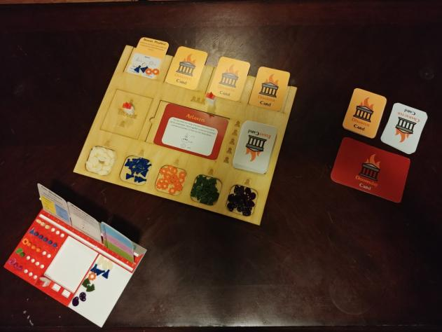

FailState Board Game

This project was a 10-week long design sprint in which a team of four UX designers created
an educational board game based on the different types of government.
Process
- First, we researched different board games and worked with students to learn about their needs.
- Second, we prototyped the basic interactions we wanted in our game.
- Third, we continued to test and iterate on our design until we had a high-fidelity version of the game.
What I learned
- Creating something to be fun, like a game, can require a lot of interesting decisions.
- Scoping a project is an extremely important step.
- Projects can turn out differently than you first expected, and that's ok.
Thanks for Reading
If you would like to learn more or reach out to me, visit my portfolio site here.